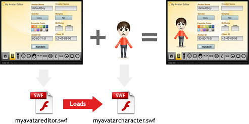

Developers
The usefulness of My Avatar Editor does not end with MyAvatarEditor.com. Other web site developers can also choose to use the editor and its technology for their own purposes.
Table of Contents
Overview
My Avatar Editor is a Flash-based application written in ActionScript 3.0 targeting Flash Player 10. The editor itself consists of two SWF files:
- myavatareditor.swf (640 x 500 px): The interface of the editor consisting of the characteristic selection screens and the file menu and its screens
- myavatarcharacter.swf (375 x 600 px): The graphics representing the avatar character itself as seen on the left side of the main editor interface
The myavatareditor.swf (a.k.a. the editor SWF) dynamically loads the myavatarcharacter.swf (a.k.a. the avatar SWF) into itself at runtime to show the avatar preview. Technically, the editor SWF can run without the avatar SWF, but no avatar would be visible and the export functions would be disabled.

The avatar SWF can function on its own without the editor SWF as seen on http://helloiti.github.io/mae/show.html. When viewed in this manner, there are no (default) user-facing controls to modify avatar characters; they can only be viewed as a static graphic.
Developers wishing to take advantage of My Avatar Editor can use (more or less) one of four approaches, all of which have different requirements for tooling, technologies, and skill set:
- Basic: Use My Avatar Editor in its current state with the same functionality seen on MyAvatarEditor.com
- JavaScript-driven: Include the editor, or just the character component, in a web page and interact with it through JavaScript
- ActionScript-driven: Use a custom, wrapper SWF to load and interact with the editor or character component
- Advanced: Create a new SWF based off of the source code of the editor and/or avatar character component SWFs
Each can use either the avatar SWF alone or the editor SWF along with the avatar SWF. Examples are avaiable below.
Query Variables
A common feature for both myavatareditor.swf and myavatarcharacter.swf are support for query variables. Query variables are values defined in a URL query, such as in a link or URL address. One you may have seen used in avatar links is avatar:
http://helloiti.github.io/mae/?avatar=6cce00520061...
- avatar
- The avatar variable in a URL query string uses an avatars hex code to define what avatar will be loaded when the SWF is loaded.
- hosted
- [Avatar SWF only] When an avatar SWF is "hosted" it means that it is being loaded into and used by host container, namely another SWF. When not hosted, the avatar SWF will show a My Avatar Editor logo in the top left, and resize itself to fit the screen, also showing just a face when resized within a flatter proportion. Normally, this is detected automatically. However, for situations when the avatar SWF is not loaded within another SWF, and just placed in a web page, say, for the purposes of having it controlled with JavaScript, you can force hosted to be turned on so that resizing won't occur when the avatar changes.
Each of the suggested approaches to working with the My Avatar Editor files can use these variables.
Basic Usage
The simplest way to integrate My Avatar Editor into your own website is to place the existing editor into your page without modification. This will give you all the functionality of the editor on MyAvatarEditor.com, but placed in the context of your own site. There are three steps for this:
- Download the editor SWF files from the Download Section
- Upload these files to your web server
- Create a new page, or modify an existing page, including the necessary SWF embedding code
Most HTML editing tools, like Adobe Dreamweaver, have commands in place to make this process seamless. However, if you want to code the embed yourself, I suggest using SWFObject. Basic usage is explained in Embedding SWFs into a Web page.
JavaScript-driven
For developers who know nothing about, nor care to learn anything about Flash and ActionScript, there is a simple JavaScript API that can be used to interact with either the editor SWF or the avatar character SWF.
Requirements
Developers should have basic JavaScript knowledge, though the API and its use is simple enough that novices would probably be able to handle it just fine. The API itself, however, also has some minimal browser requirements as listed below.
| Windows OS | Mac OS | Linux OS |
|---|---|---|
| Firefox 1.0 and later | Firefox 1.0 and later | Firefox 1.5.0.7 and later |
| Mozilla 1.7.5 and later | Mozilla 1.7.5 and later | Mozilla 1.7.x and later |
| Netscape 8.0 and later | Netscape 8.0 and later | SeaMonkey 1.0.5 and later |
| Internet Explorer 5.0 and later | Safari 1.3 and later |
JavaScript API
The methods in this API are called directly from the SWF element in the HTML. You can get a reference to this object using the standard JavaScript command, document.getElementById().
- getAvatarValue(stringName)
- Returns the value of the avatar characteristic of the name provided. For more information on what names can be used, see Avatar Characteristic Names.
- setAvatarValue(stringName, someValue)
- Sets an avatar characteristic of the specified name to the specified value. If the avatar characteristic is restricted to a range of values (most, if not all are), the value passed will be clamped to that range. When this value is set, an avatar is not redrawn. To redraw the avatar, use the
draw()method. If performing multiplesetAvatarValue()calls in succession, you should usedraw()only once after the calls tosetAvatarValue()are made. - getAvatarHex()
- Returns the hexadecimal avatar code as seen following "avatar=" in an avatar URL. For more information on the format of this data, see Avatar Hex Code Format.
- setAvatarHex(stringValue)
- Sends a hexadecimal avatar code, stringValue, to a SWF redefining the avatar characteristics. If a hex code is incomplete, the missing characters are filled with 0 values.
- getAvatarXML()
- Returns an avatar's full XML string as seen in the File Menu's XML screen in the editor. For more information on the format of this data, see Avatar XML Format.
- setAvatarXML(stringValue)
- Applies XML-defined characteristics (stringValue) to the avatar in a SWF. Unlike with the hex code, missing characteristics in XML are simply ignored. In other words, nothing about an avatar is changed with this call unless the XML specifically indicates a change. If the XML contains only one node, only one characteristic in the avatar will change. There are no bounds checking (value clamping) with XML values.
- setAvatarSource(stringValue)
- A generic version of setAvatarHex and setAvatarXML. This method internally parses the string value passed and determines automatically if it is hex or XML.
- randomizeAvatar()
- Randomizes the avatar character of a SWF. This is identical to the randomizing that occurs when clicking on the Random button in the editor.
- draw(quickDraw)
- Re-renders an avatar character based on the current state of the data being used to represent it. This is automatically called when setting full avatar sources (such as hex or XML), but not when using
setAvatarValue().
quickDraw: Optional. When true, a slightly less intensive render is used. This usually means not storing the SharedObject character data and/or not updating the avatar URL for the editor SWF. Visually, the character will be updated regardless of this value. Default is false.
Some data verification is done to make sure values are valid. If an invalid value is passed through a hex code, for example, when you get that hex code back, it may be different from the string you originally passed in.
Sample
// editor SWF is within the HTML Element with id="avatarSWFContainer"var swf = document.getElementById("avatarSWFContainer");// XML to change an avatar's hair characteriesticsvar xml = '<Avatar xmlns="http://www.myavatareditor.com/xml/avatar/1">' + ' <Hair>' + ' <type>28</type>' // pig-tails + ' <color>5</color>' // pail brown + ' <part>1</part>' // alternate part + ' </Hair>' + '</Avatar>';// Ammend avatar in swf with characteristics defined in xmlswf.setAvatarXML(xml);
Example
The following example uses JavaScript to get and set the hex code, set facial features, and randomize the avatar of the avatar SWF.
This example uses SWFObject to embed the avatar SWF into the web page, placing it in a div element identified as "avatarSWFContainer". Each form control references the SWF using getElementById("avatarSWFContainer") and then calls the necessary API.
The hosted query variable is also set in the SWFObject embed code. By setting hosted to true, the avatar SWF will not automatically reposition the character to be centered in the SWF window (which will cause characters to shift vertically if a different height than the one before. This also removes the My Avatar Editor logo and link.
ActionScript-driven
By creating a custom SWF that loads in the editor or avatar SWFs, you can communicate directly with My Avatar Editor code using your own, custom ActionScript. This approach, unlike the Advanced usage, does not require using or having the source code to My Avatar Editor. It is instead creating a wrapper that is able to access and use the pre-compiled code already in the editor and avatar SWFs.
Requirements
- Basic knowledge of ActionScript 3.0
- A tool or compiler for creating an ActionScript 3.0, Flash Player 10 SWF
- Flash Player 10 or later
More information about tools capable of creating SWFs can be found in the appendix Creating SWF Files.
In addition, when using a wrapper for the editor and/or avatar SWF files, it's important that those files and your wrapper be placed on the same domain. Security restrictions prevent cross-domain ActionScript communication between SWFs.
Core ActionScript API
The full ActionScript API for My Avatar Editor is extensive, and much of it relies on data types defined in the source files. The following API consists of a limited set of the full API but should be all that a wrapper SWF really needs. This API still provides much more functionality compared to that of the JavaScript API.
- getAvatarValue(name:String):*
- Returns the value of the avatar characteristic of the name provided. For more information on what names can be used, see Avatar Characteristic Names.
- setAvatarValue(name:String, value:*):void
- Sets an avatar characteristic of the specified name to the specified value. If the avatar characteristic is restricted to a range of values, the value passed will be clamped to that range. When this value is set, an avatar is not redrawn. To redraw the avatar, use the
draw()method. If performing multiplesetAvatarValue()calls in succession, you should usedraw()only once after the calls tosetAvatarValue()are made. - avatarHex:String
- Property representing the hexadecimal avatar code as seen following "avatar=" in an avatar URL. For more information on the format of this data, see Avatar Hex Code Format. Read-write.
- avatarXML:XML
- Property representing an avatar's full XML string as seen in the File Menu's XML screen in the editor. For more information on the format of this data, see Avatar XML Format. Read-write. Unlike with the hex code, missing characteristics in XML are simply ignored. In other words, nothing about an avatar is changed with this call unless the XML specifically indicates a change. If the XML contains only one node, only one characteristic in the avatar will change. There are no bounds checking (value clamping) with XML values. Read-write.
- avatarBinary:ByteArray
- A binary representation of an avatar in the form of a ByteArray object. This is the same data found in avatarHex, just in a different format (binary). If you're reading .mae or .mii files directly from disk or a web server, their data values can simply be assigned to this value. For more information on the format of this data, see Avatar Binary Format. Read-write.
- avatarSource:*
- A generic property for setting avatar data from any source. Valid types include: hex code string, binary ByteArray (binary version of hex string, XML, or a generic Object object with avatar properties defined within. This method internally recognizes which type is used and defines an avatar based in the value provided. For more information on the different formats of data, see Avatar Data Formats. There are no bounds checking (value clamping) with XML or Generic object values. Read-write, but the property only stores what data you last provided it. This would mostly be used for setting (writing) only.
- randomizeAvatar():void
- Randomizes the avatar character of a SWF. This is identical to the randomizing that occurs when clicking on the Random button in the editor.
- initialize():void
- Initializes an avatar to load the "initial" avatar data. Without calling initialize or otherwise setting any avatar data, the avatar graphics are remain in their default state which is not representative of any possible avatar. Calling initialize will first load an avatar from a query variable if available, then fall back to the local SharedObject saved on the last draw. When the avatar SWF is not loaded into another SWF, initialize is called automatically.
- draw(quickDraw:Boolean = false):void
- Re-renders an avatar character based on the current state of the data being used to represent it. This is automatically called when setting full avatar sources (such as hex or XML), but not when using
setAvatarValue().
quickDraw: Optional. When true, a slightly less intensive render is used. This usually means not storing the SharedObject character data and/or not updating the avatar URL for the editor SWF. Visually, the character will be updated regardless of this value. Default is false. - version:String
- The version of the SWF file. Versions are defined within both the editor and avatar SWF files. For the best compatibility, an editor's version should match the version of the character SWF it loads. Read-write.
- editorURL:String
- [Editor SWF only] The domain of the URL that appears with the avatar hex code in the bottom of the editor window. Read-write
- currentTab:int
- [Editor SWF only] Numeric value representing the current tab selected in the editor with 1 being the first (General), and 13 being the last (Mole). Read-write. Setting this value will change the currently selected tab.
- openFileMenu(screen:String = "menu"):void
- [Editor SWF only] Opens the File Menu.
screen: determines which screen of the file menu is displayed. Possible values include: "menu" for the main menu, "xml" for the XML Screen, or "export" for the Export Screen. - closeFileMenu():void
- [Editor SWF only] Closes the File Menu.
- currentFileMenuScreen():String
- [Editor SWF only] Returns the name of the current File Menu screen ("menu", "xml", and "export"). If the File Menu is not open, null is returned.
- isLoaded:Boolean
- [Editor SWF only] When true, indicates that the editor has loaded in the avatar SWF and has moved from the loading screen to the General Characteristics screen (tab 1).
- [Event type="avatarDraw"]
- Display list event indicating that the visual characteristics of the avatar has changed and re-rendered.
- [Event type="editorLoaded"]
- [Editor SWF only] Display list event from the editor SWF indicating that the editor has loaded in the avatar SWF and has moved from the loading screen to the General Characteristics screen (tab 1).
If needed, additional details can be revealed through the My Avatar Editor source files.
Sample
// variable to reference the avatar swfvar avatarSWF:Object;// loader to load charactervar loader:Loader = new Loader(); addChild(loader);// load the avatar SWF and when complete,// initialize in loaderCompleteHandlerloader.contentLoaderInfo.addEventListener(Event.COMPLETE, loaderCompleteHandler); loader.load(new URLRequest("myavatarcharacter.swf")); function loaderCompleteHandler(event:Event):void {// assign avatarSWFavatarSWF = loader.content;// initialize the avatar from the local shared// object which should have the last character// saved from this domain, then make it baldavatarSWF.initialize(); avatarSWF.setAvatarValue("hairType", 30); }
Example
The following example uses a SWF wrapper to add slider controls for changing many of the avatar characteristic types.
This example uses known ranges of possible characteristic values to determine how many steps a slider can have. You can get these values from observation from within the editor, or by learning more about the Avatar Binary file format on which these values are based.
It's also important to notice that the variable avatarSWF was defined with a datatype of Object. This allows you to dynamically access the API without knowing the actual defined type of the object (as defined in the source files). Referencing Loader.content directly would produce an error because it has a datatype of DisplayObject.
Advanced Usage
To get the absolute most out of My Avatar Editor and the technology behind it, you'll need to work directly with the source assets and code used to create it. These assets give you access to changing or adding new graphics to both the editor and the avatar characters as well as the logic behind putting bringing those assets together to see what you have today with My Avatar Editor.
It's important to understand that My Avatar Editor targets Flash Player 10. There are some important reasons it does this and a lot of functionality will break, notably in the editor SWF, if you attempt to use Flash Player 9. If you want to target Flash Player 9, you're best chance is to create a new editor from scratch. You might even be able to get away with only creating a new editor; the avatar SWF might be compatible enough to handle the transition down to SWF 9.
Because My Avatar Editor also targets the AIR runtime, you may need to adjust your configuration to account for errors from classes using AIR APIs if not targeting AIR. Solutions include publishing for AIR, updating your playerglobal.swc to include the AIR definitions (how I did it), or compiling with strict mode turned off.
Requirements
- Knowledge of ActionScript 3.0
- Adobe Flash CS4 or later
- My Avatar Editor Source Files
To know what version of the source files you're working with, assuming you haven't modified these values, check the text fields at the top left of both the editor and avatar FLA files. The rest you'll have to figure out on your own. Good luck!
Appendix
The following topics cover additional information that may be helpful when working with My Avatar Editor files.
Embedding SWFs into a Web page
To view a Flash SWF in a web page, it needs to be embedded within that page. This process has been complicated with different browser implementations and lawsuits which fought over the rights to the technology which made this possible. The simplest, and one of the most common, is using simple object/embed tags in HTML. Just make sure you have uploaded the necessary editor and avatar SWF files to your web server and that they are properly linked to in the code.
<object width="640" height="500"> <param name="movie" value="myavatareditor.swf"></param> <param name="allowscriptaccess" value="always"></param> <embed type="application/x-shockwave-flash" src="myavatareditor.swf" width="640" height="500" allowscriptaccess="always"> </embed> </object>
This, however, may require clicking on a SWF before you can interact with that SWF. An alternate approach that avoids this step is writing that code through JavaScript. There is a JavaScript library called SWFObject that makes this process painless and also includes other functionality such as version checking (remember, My Avatar Editor requires at least Flash Player 10). This is what MyAvatarEditor.com uses. More information about how to use SWFObject can be found on the SWFObject Wiki.
<div id="editorSWFContainer">Alternate content.</div>
<script type="text/javascript">
swfobject.embedSWF("myavatareditor.swf",
"editorSWFContainer", "640", "500", "10.0.0");
</script>
Note: This requires the inclusion of the SWFObject javascript file.
Query variables in a web page's URL will need to be transferred from that URL to the embedded SWF. This could be handled using a server-side script, appending those values on the end of the SWF URL, or be done dynamically using JavaScript. SWFObject allows you to do this through a parameter in the embedSWF call.
Creating SWF Files
There are a large number of tools that can create SWF files. The tool used for My Avatar Editor was Flash Professional CS4. Another popular tool is Flex Builder which is a rich coding environment that uses the free Flex SDK to compiling MXML markup and ActionScript code into SWFs.
If you are modifying the source of My Avatar Editor, you will need to use Flash CS4. However, if you are creating a wrapper SWF as covered by the section explaining ActionScript-driven Usage, you can use any tool capable of creating a SWF targeting Flash Player 10. If you are not using Flash CS4, then the free Flex SDK would probably be your best alternative.
Flash CS4
Adobe Flash CS4 is probably the easiest tool to create SWF files. When starting a new file, create a new Flash File for ActionScript 3.0 and make sure the settings are targeting Flash Player 10. This, for CS4, should be the default. If you want to be sure, or modify this target, you can do so using File > Publish Settings... > Flash [Tab].
Once you have a new file loaded, you're ready to go. Graphics can be added to the screen and code can be written in frames in the timeline. For more information about using Flash, see the included documentation.
Flash CS4 will cost you to buy. For a free option, consider using the Flex SDK. My Avatar Editor was built using Flash CS4.
Free Flex SDK
The Flex SDK provides a free solution for creating SWF files. It consists of the core components used by Flex Builder, the Eclipse-based code editing and layout application for creating Rich Internet Applications (RIAs) SWF files. Flex Builder itself is not free. However, it is not required to generate SWFs. For making a SWF, all you need is some ActionScript files, which you can write with any text editor, and the free Flex SDK.
The Flex 4 SDK (a.k.a. Gumbo) will allow you to directly target a Flash Player 10 SWF. You can download it here:
You can also use the Flex 3 SDK, but you will need some additional configuration which is explained in the document Flex SDK: Targeting Flash Player 10.
Once you have the Flex SDK files, you can start coding some ActionScript (or MXML) source files and run them through the mxmlc compiler in the bin folder of the SDK. The following tutorial was written using a beta build of the Flex 2 SDK but covers the basics needed to getting started with the Flex 4 SDK if you don't know already: Beginners Guide to Getting Started with AS3 (Without Learning Flex).
Though My Avatar Editor was built using Flash CS4, the Flex SDK can be used to create wrapper SWFs as described by the ActionScript-driven approach.
Avatar Data Formats
The data used to represent an avatar can take many formats. The main format is binary file, usually with the extension of .mae or .mii. It was this file (specifically .mii, .mae is a re-purposing of that same file) on which My Avatar Editor was based. Other formats also exist to represent the same data.
Avatar Binary
The format of this binary file is defined by the data used to save Mii™ characters on the Nintendo® Wii™'s remote. More information about the Mii data format is available from WiiBrew.org. In ActionScript, this data is stored as a ByteArray.
Avatar Hex Code
An avatar's hex code is a string representation of the Avatar Binary. A hex code string should be 148 characters long. Characters are grouped into hexadecimal couples representing a single byte. When a hex code shorter than 148 characters is read into My Avatar Editor, the missing values are replaced with 0. Zero values are not ideal; consider the following avatar:
Avatar XML
The XML format used to represent avatar characters is a custom set of XML elements designed specifically for My Avatar Editor. In the editor interface, an avatar's XML can be viewed in the XML Screen of the File Menu. Example:
<Avatar xmlns="http://www.myavatareditor.com/xml/avatar/1">
<id>A76EA713</id>
<clientID>0</clientID>
<name>Random</name>
<creatorName>MAE</creatorName>
<birthDay>31</birthDay>
<birthMonth>2</birthMonth>
<gender>0</gender>
<mingles>1</mingles>
<Beard>
<type>0</type>
<color>7</color>
</Beard>
<Body>
<height>51</height>
<weight>27</weight>
</Body>
<Eye>
<type>30</type>
<color>4</color>
<x>5</x>
<y>10</y>
<size>2</size>
<rotation>1</rotation>
</Eye>
<Eyebrow>
<type>2</type>
<color>7</color>
<x>12</x>
<y>3</y>
<size>0</size>
<rotation>0</rotation>
</Eyebrow>
<Face>
<type>2</type>
</Face>
<Glasses>
<type>0</type>
<color>4</color>
<y>11</y>
<size>2</size>
</Glasses>
<Hair>
<type>43</type>
<color>7</color>
<part>0</part>
</Hair>
<Head>
<type>1</type>
</Head>
<Mole>
<type>0</type>
<x>9</x>
<y>14</y>
<size>2</size>
</Mole>
<Mouth>
<type>3</type>
<color>2</color>
<y>16</y>
<size>6</size>
</Mouth>
<Mustache>
<type>0</type>
<y>15</y>
<size>1</size>
</Mustache>
<Nose>
<type>3</type>
<y>12</y>
<size>5</size>
</Nose>
<Shirt>
<color>9</color>
</Shirt>
<Skin>
<color>5</color>
</Skin>
</Avatar>
The document type definition (DTD) for this XML can be found here:
When an XML file is read by either the editor or avatar SWFs, the definitions in the XML are applied to the current avatar character. If the XML file is incomplete, the missing XML elements are ignored and those characteristics of the current avatar remain unchanged. The following XML would only change the y and size an avatar's nose.
<Avatar xmlns="http://www.myavatareditor.com/xml/avatar/1">
<Nose>
<y>5</y>
<size>3</size>
</Nose>
</Avatar>
Be sure to include the namespace (xmlns) for each Avatar node. Should this format ever change, that namespace would be used to identify which version of the XML format is being used.
Avatar Generic Object
A generic object can be used to specify various characteristics for an avatar. There is no explicit API for setting these objects, but avatarSource will accept objects of this type.
Like XML, only the properties defined within the object will be set in the current character. Variable names follow the format defined in Avatar Characteristic Names.
var avatarData:Object = { noseType: 2, eyebrowX: 4, height:124 };
Avatar Characteristic Names
Certain APIs use property names to reference different avatar characteristics. Property names follow the XML naming, but using camelCase, starting with a lowercase letter, and void of any hierarchies. For example, the XML <Eye><y></y></Eye> in a generic object would be eyeY. The XML <width></width> would simply be width. A full list of these properties, alone with their ActionScript data type, is below.
id:uint; clientID:uint; name:String; creatorName:String; gender:int; mingles:int; favoriteColor:int; birthDay:int; birthMonth:int; height:int; weight:int; headType:int; skinColor:int; faceType:int; hairType:int; hairColor:int; hairPart:int; eyebrowType:int; eyebrowRotation:int; eyebrowColor:int; eyebrowSize:int; eyebrowX:int; eyebrowY:int; eyeType:int; eyeRotation:int; eyeColor:int; eyeSize:int; eyeX:int; eyeY:int; noseType:int; noseSize:int; noseY:int; mouthType:int; mouthColor:int; mouthSize:int; mouthY:int; glassesType:int; glassesColor:int; glassesSize:int; glassesY:int; beardType:int; beardColor:int; mustacheSize:int; mustacheType:int; mustacheY:int; moleType:int; moleSize:int; moleX:int; moleY:int;